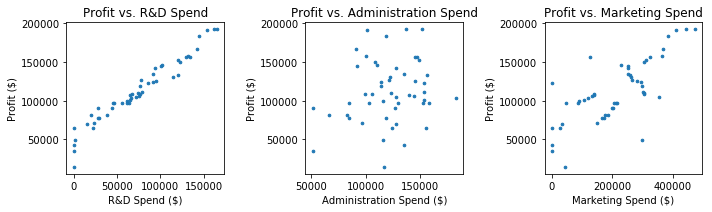

❀ Ｍｕｌｔｉｐｌｅ Ｌｉｎｅａｒ Ｒｅｇｒｅｓｓｉｏｎ Ｅｑｕａｔｉｏｎ：
ｙｉ ＝ ｂ０ ＋ ｂ１ｘ１ｉ ＋ ｂ２ｘ２ｉ
＋．．．＋ ｂｎｘｎｉ
❀ Ｓｃｅｎａｒｉｏ：
As a data scientist, you are given a dataset containing information about 50 different
startups as the table above. You are asked to analyze how each startup's 3 types of spends and state location are related to its profit
(if there is any relationship at all). After finding this relationship, you must also construct an algorithm to predict the profit of
a new startup, given the info of its 3 spends & state location.
❀ Ａｐｐｒｏａｃｈ：
✣ For data preprocessing, the 3 state names (New York, California, Florida) were encoded into 3 separate columns of 1's and 0's
using One Hot Encoding.
✣ Before fitting Linear Regression, Backward Elimination method was used to find that out of 4 independent variables
in the raw data, only 2 (R&D Spend, Marketing Spend) have significant statistic relationship with the Profit. Therefore, Multiple Linear
Regression was performed only with these 2 variables.
✣ Independent Variables(x1, x2): R&D Spend, Marketing Spend
✣ Dependent Variable(y): Salary
✣ 50 datapoints were randomly split into:
⋆ 40 training points- to fit Simple Linear Regression with the points' x&y values
⋆ 10 test points- to test if the fitted model's salary predictions are close to the actual
salary values
❀ Ｐｙｔｈｏｎ Ｃｌａｓｓｅｓ Ｕｓｅｄ：
✣ (from sklearn.preprocessing) LabelEnconder
✣ (from sklearn.preprocessing) OneHotEnconder
✣ (from sklearn.model_selection) train_test_split
✣ (from sklearn.linear_model) LinearRegression
✣ (from statsmodels.formula.api) OLS
❀ Ｒ Ｐａｃｋａｇｅｓ／Ｃｌａｓｓｅｓ Ｕｓｅｄ：
✣ lm
✣ caTools
✣ ggplot2
❀ Ｉｍｐｌｅｍｅｎｔａｔｉｏｎ ｉｎ Ｐｙｔｈｏｎ ＆ Ｒ：
*Try running the Python code & insert the new startup's R&D Spend and Marketing Spend to get an estimate of the Profit!*
https://github.com/lukysummer/Multiple-Linear-Regression-with-Backward-Elimination
❀ Ａｃｃｕｒａｃｙ：
✣ Training Accuracy: 0.9496654854268443
✣ Test Accuracy: 0.9474386447268489
❀ ＲＥＳＵＬＴＳ：

The graph above shows the scatter plots of the Profit vs. three individual independent variable.
It can be observed that the two variables selected by Backward Elimination to have high statistical relationship with Profit
(R&D Spend, Marketing Spend) do have linear relationship with the Profit. On the other hand, Administration Spend seems to
have no significant relationship with Profit.